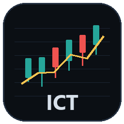
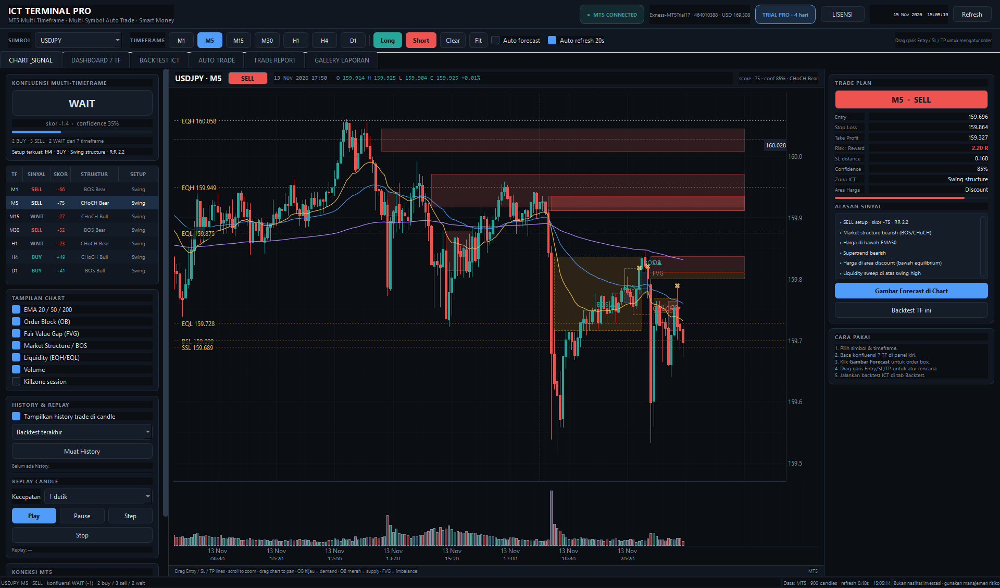
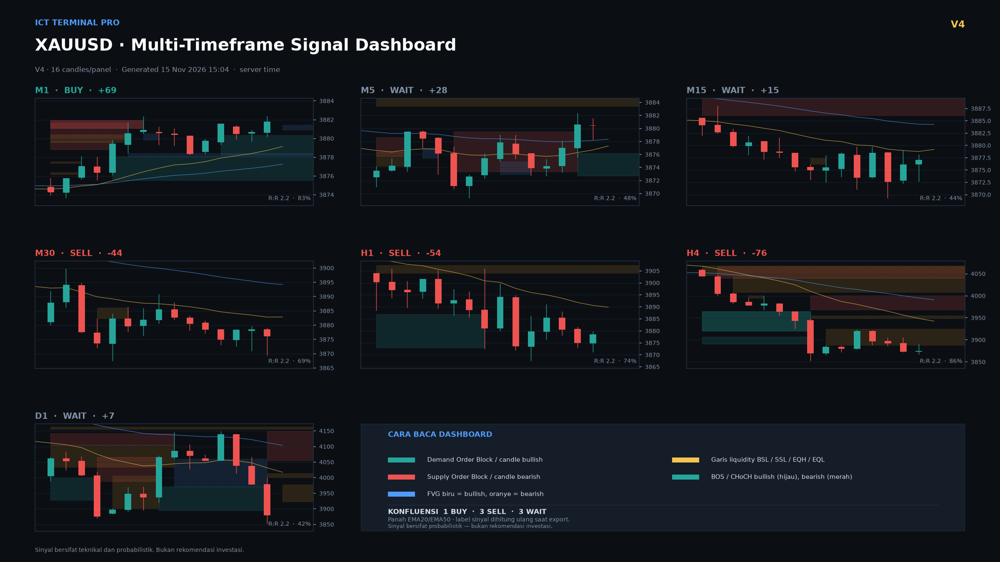
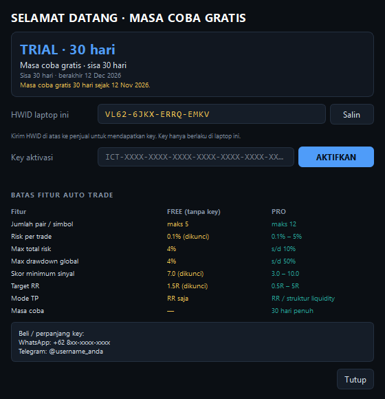
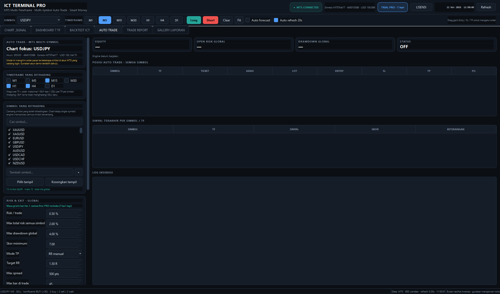

Live 7 Timeframe Charting
Pantau pergerakan pasar serentak dari M1, M5, M15, M30, H1, H4 hingga D1 dengan engine PyQt6 & pyqtgraph berkecepatan tinggi tanpa freeze.

ICT Terminal Prov2.0.4Terminal analisis pasar & eksekusi untuk MetaTrader 5. Logika ICT / Smart Money Concepts, deteksi Order Block & Fair Value Gap, konfluensi 7 timeframe, hingga Order Box interaktif ala TradingView — seluruhnya dihitung lokal di komputer Anda, tanpa database atau server rumit.

KLIK UNTUK MEMPERBESARDibangun untuk efisiensi tingkat tinggi tanpa beban database server. Semua kalkulasi market structure, indikator, dan sinyal dieksekusi secara instan di mesin lokal Anda.
Pantau pergerakan pasar serentak dari M1, M5, M15, M30, H1, H4 hingga D1 dengan engine PyQt6 & pyqtgraph berkecepatan tinggi tanpa freeze.
Deteksi otomatis Order Block (Demand/Supply), Fair Value Gap (FVG), Break of Structure (BOS), CHoCH, Liquidity Sweeps, dan Equal High/Low.
Buat kotak posisi Long atau Short langsung di chart. Geser garis Entry, Stop Loss, dan Take Profit secara visual untuk menghitung Risk/Reward presisi.
Proyeksi skenario harga otomatis dari Entry menuju Retest hingga target keuntungan, lengkap dengan uncertainty cone berbasis volatilitas ATR terkini.
Eksekusi order otomatis ke terminal MT5 dengan proteksi ketat: risiko global 0.5%/trade, max drawdown protection 4%, serta filter sesi London & New York (Killzone).
Tidak membutuhkan MySQL, PostgreSQL, atau langganan cloud. Semua data candle ditarik langsung dari MT5 lokal dan tersimpan sebagai file di komputer Anda.
Deteksi level likuiditas institusional dengan rumus matematika presisi.
Menandai area candle terakhir sebelum pergerakan impulsif institusional dengan kotak transparan di chart.
Mendeteksi imbalance 3-candle yang sering menjadi magnet penarikan harga untuk retest sebelum melanjutkan tren.
Identifikasi otomatis Break of Structure untuk continuation dan Change of Character untuk sinyal reversal awal.
Mendeteksi false breakout di area Equal Highs (EQH) atau Equal Lows (EQL) sebelum pergerakan besar dimulai.
Tema dark cyber berstandar terminal finansial global: tajam, informatif, dan responsif tanpa distraksi. Pilih modul untuk melihat detail antarmuka.
Candlestick resolusi tinggi yang terhubung langsung ke MetaTrader 5. Setiap formasi candle dievaluasi secara simultan dengan struktur ICT.

PERBESARTidak perlu berpindah chart secara manual. Tujuh mini-chart hidup (M1, M5, M15, M30, H1, H4, D1) tersaji berdampingan tanpa mengorbankan performa.
 PERBESAR
PERBESAR
Visualisasikan perencanaan perdagangan sebelum masuk pasar dengan presisi tinggi, layaknya fitur premium platform charting profesional.
 PERBESAR
PERBESAR
Jangan trading melawan arus tren besar. Matriks konfluensi merangkum bias dari timeframe tinggi (H4 & D1) hingga timeframe eksekusi (M1, M5, M15).
Simulasikan batas toleransi risiko trading Anda. Hitung ukuran lot aman berbasis batas risiko 0.5% per trade untuk menjaga modal dari drawdown berlebih.
Lihat bagaimana algoritma perlindungan risiko ICT Terminal Pro menghitung ukuran lot yang aman secara otomatis.
*Kalkulasi ini sudah tertanam di logika Auto Trade aplikasi untuk mencegah risiko over-leveraging dan margin call.
Replika interaktif alat Order Box dari aplikasi: tarik garis Entry, Stop Loss, dan Take Profit untuk melihat rasio Risk/Reward, estimasi lot, serta proyeksi skenario harga secara langsung.
DATA SINTETIS UNTUK DEMONSTRASI ALAT ORDER BOX — BUKAN HARGA LIVE.
Tidak memerlukan akun server, pendaftaran database, ataupun konfigurasi backend. Semua file distribusi siap pakai dapat langsung dibuka di PC/laptop Anda.
Paket all-in-one paling praktis: aplikasi native cepat, batch unlocker otomatis, panduan lengkap PDF, dan template laporan.
ICT-Terminal-Pro-2.0.4.exeBuka_Aplikasi.bat (bypass SmartScreen)Satu file tunggal yang dapat langsung dijalankan tanpa proses instalasi (zero-installation).
Ebook tutorial 60+ halaman: membaca sinyal, mengatur bot auto trade, dan strategi ICT step-by-step.
Salin dan jalankan perintah satu baris di PowerShell untuk mengunduh rilis resmi langsung dari GitHub.
curl.exe -L -o ICT-Terminal-Pro-2.0.4-native-win64.zip "https://github.com/khafienew-hub/ict-terminal-pro/releases/download/v2.0.4/ICT-Terminal-Pro-2.0.4-native-win64.zip" ; Expand-Archive ICT-Terminal-Pro-2.0.4-native-win64.zip -DestinationPath ICT-Terminal -Force ; Get-ChildItem ICT-Terminal -Recurse | Unblock-File ; echo "Download Selesai! Buka folder ICT-Terminal"curl.exe -L -o ICT-Terminal-Pro-2.0.4.exe "https://github.com/khafienew-hub/ict-terminal-pro/releases/download/v2.0.4/ICT-Terminal-Pro-2.0.4.exe" ; Unblock-File ICT-Terminal-Pro-2.0.4.exe ; echo "Download Selesai! Jalankan ICT-Terminal-Pro-2.0.4.exe"Unduh ICT-Terminal-Pro-2.0.4-native-win64.zip, lalu ekstrak ke folder di PC Anda
(misalnya D:\ICT-Terminal).
Jalankan MetaTrader 5 (akun demo atau real), login, dan pastikan koneksi broker berstatus aktif.
Klik 2x Buka_Aplikasi.bat (otomatis melepas proteksi Windows) atau langsung buka
ICT-Terminal-Pro-2.0.4.exe.
Pilih pair favorit Anda (EURUSD, GBPUSD, XAUUSD, NAS100, dll), lihat sinyal konfluensi 7 TF, buat order box, dan nikmati masa uji coba PRO Trial 30 hari.
Setiap komputer baru otomatis mendapatkan masa percobaan total 30 hari tanpa perlu memasukkan kartu kredit.
Otomatis aktif begitu aplikasi pertama kali dibuka di laptop Anda.
Buka kunci penuh kontrol Auto Trade, multi-pair tak terbatas, dan dukungan personal.

DIALOG AKTIVASI
Kontrol penuh parameter, multi-pair, dan perlindungan risiko institusional.
Segala hal yang perlu Anda ketahui mengenai spesifikasi, instalasi, dan cara kerja ICT Terminal Pro.
ICT Terminal Pro adalah aplikasi desktop mandiri (Windows) yang menghubungkan analisis komprehensif 7 timeframe serentak dengan antarmuka modern layaknya terminal finansial profesional.
Berbeda dengan file custom indicator .ex5 yang sering membuat MetaTrader 5 berat,
ICT Terminal Pro berjalan di proses terpisah dengan komputasi multi-core: grafik halus, deteksi
Order Block & Fair Value Gap otomatis, order box interaktif, serta bot auto trade terintegrasi.
Aplikasi ini dirancang dengan prinsip zero-friction standalone. Anda tidak perlu menyewa server MySQL, PostgreSQL, ataupun membayar hosting database bulanan.
Data candle ditarik real-time melalui API lokal MetaTrader 5 di komputer Anda. Gambar forecast, kalender trade report, dan data order disimpan sebagai file biasa (PNG, XLSX, JSON cache) di folder lokal sehingga privasi akun tetap di tangan Anda.
Klik tombol Unduh Paket ZIP di menu Download. Setelah selesai terunduh:
Buka_Aplikasi.bat atau
ICT-Terminal-Pro-2.0.4.exe.
Aplikasi akan terbuka dan mendeteksi akun MT5 Anda secara otomatis.
Ini wajar di Windows untuk file .exe baru yang diunduh dari internet (Mark of the Web
/ SmartScreen). Ini bukan virus dan bukan file rusak.
Buka_Aplikasi.bat di dalam paket ZIP.
Script ini melepas cap blokir Windows dan meluncurkan aplikasi.Sangat aman. Algoritma Auto Trade ICT Terminal Pro dirancang mematuhi aturan ketat evaluasi prop firm:
Semua instrumen yang tersedia di broker MetaTrader 5 Anda didukung penuh dengan sistem multi-pair:
ICT Terminal Pro dirancang ringan:
Setelah 30 hari masa trial, fitur charting dan sinyal konfluensi 7 TF tetap dapat dinikmati gratis selamanya.
Untuk mengaktifkan kembali bot Auto Trade dan kontrol parameter penuh, salin Hardware ID (Kunci Mesin) dari dialog lisensi aplikasi, lalu kirimkan ke admin WhatsApp resmi di 0812-2578-0898. Lisensi akan diaktifkan secara instan.
Mulai dengan uji coba 30 hari, tanpa kartu kredit. Butuh bantuan instalasi atau aktivasi? Tim support siap membantu.